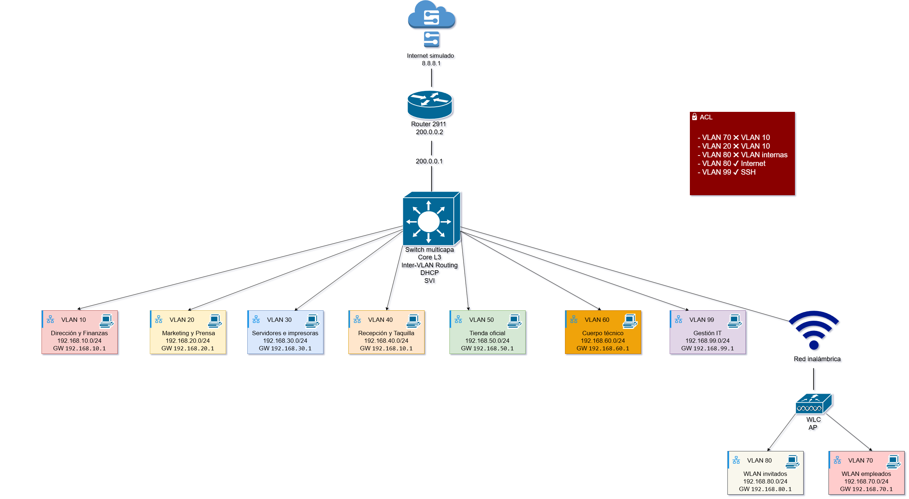
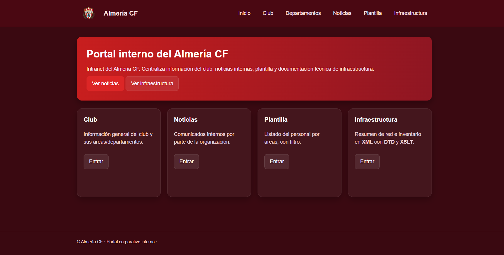
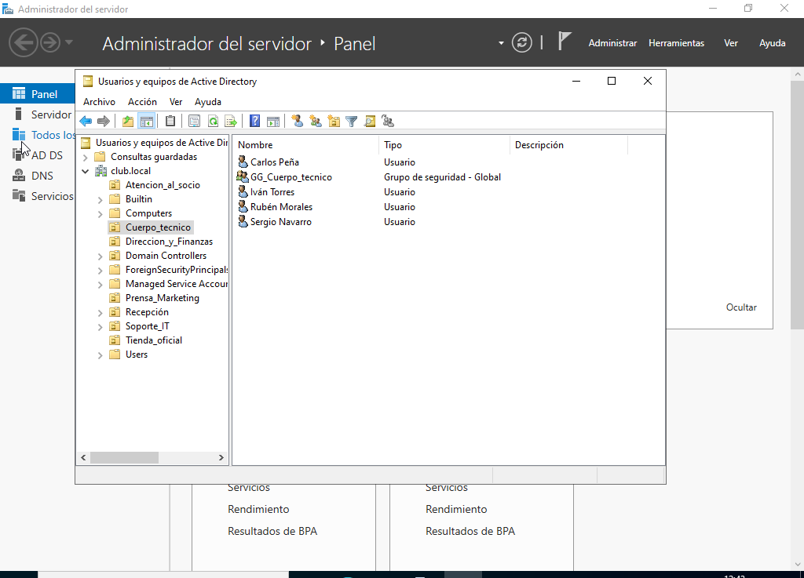
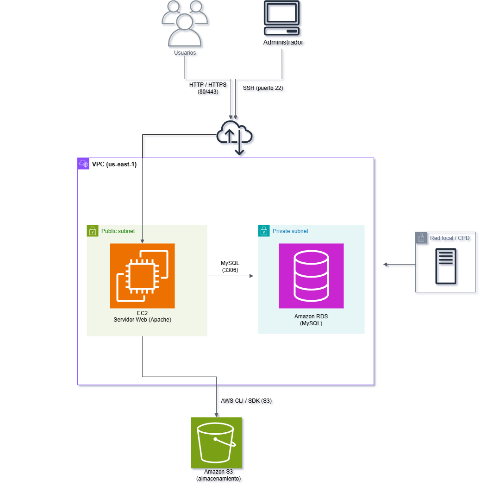

Proyecto Intermodular ASIR
Diseño e implementación de una infraestructura IT completa para un club deportivo, planteado como un entorno pyme real.
Mi proyecto
Este proyecto consiste en el diseño e implementación de una infraestructura IT completa para un club deportivo ficticio, planteado como un entorno similar al de una pequeña o mediana empresa. Es un proyecto intermodular en el que se trabajan de forma conjunta hardware, redes, sistemas, bases de datos, lenguaje de marcas y computación en la nube.
El objetivo principal ha sido construir una solución tecnológica coherente, funcional y escalable, capaz de dar soporte a distintos departamentos: usuarios, administración, conectividad, almacenamiento, servicios corporativos y publicación de recursos.
Explicación del proyecto
Se plantea desde cero la infraestructura informática de una organización: se define el hardware necesario, se diseña la red física y lógica, se implanta un entorno cliente-servidor, se crea una base de datos para gestionar los recursos tecnológicos y se amplía la infraestructura con una arquitectura híbrida en la nube mediante AWS.
Además, se desarrolla una representación estructurada del inventario tecnológico mediante XML, validado con DTD y transformado con XSLT a HTML, de forma que toda la información del sistema se muestre de manera clara y organizada dentro de la intranet del proyecto.
Una de las partes más importantes ha sido la relación entre los distintos módulos: la web de Lenguaje de Marcas se integra como intranet dentro del servidor web; la base de datos se aloja en la nube (Amazon RDS / MySQL) dentro de una arquitectura híbrida; el hardware se incorpora al inventario XML; y la red segmentada por VLANs, distribuida por departamentos, sirve de base para desplegar servidores, clientes y servicios corporativos.
Capturas del proyecto




Tecnologías utilizadas
Hardware e infraestructura
- Sobremesa corporativo
- Workstations
- Portátiles
- Servidor principal
- Switch multicapa
- Switches de acceso
- Router
- Puntos de acceso WiFi
- SAI
- RAID 5
Redes
- Cisco Packet Tracer
- VLANs
- Enrutamiento inter-VLAN
- Enlaces trunk
- WiFi corporativa e invitados
- Segmentación por departamentos
Sistemas
- Windows Server 2022
- Windows 11 Pro
- Ubuntu Desktop
- Kali Linux
- VirtualBox
- Active Directory
- DNS
- Servidor de archivos
- Servidor de impresión
- FTP
- IIS
- RDP
- PowerShell
Bases de datos y nube
- MySQL / MariaDB
- SQL
- phpMyAdmin
- AWS (nivel práctica)
- Amazon EC2
- Amazon S3
- Amazon RDS (MySQL)
- Amazon VPC
- Apache
- AWS CLI
Lenguaje de marcas
- XML
- DTD
- XSLT
- HTML
- CSS
Aprendizajes del proyecto
Entender de forma práctica cómo se diseña, organiza e implanta una infraestructura IT completa.
Relacionar áreas que suelen verse por separado (hardware, red, sistemas, servicios, BBDD y nube) y ver cómo encajan.
Reforzar la administración de sistemas: Active Directory, gestión de usuarios y permisos, servicios de red y entorno cliente-servidor.
Comprender la importancia de la segmentación por VLANs y la estructura de una red empresarial.
Descubrir un interés añadido por las bases de datos y el análisis de datos: modelado, organización y consultas.
Mejorar la resolución de problemas ante errores e incidencias reales de una infraestructura amplia.
Repositorio y documentación
Todo el proyecto está documentado y publicado en GitHub.